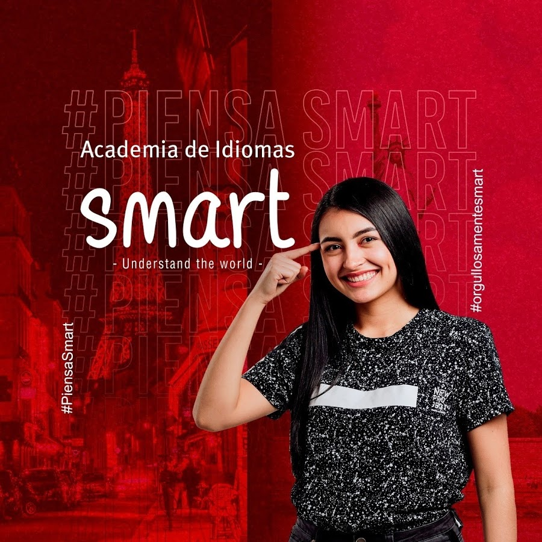

Sobre mi
Un pequeño resumen de mi vida.
-

2008-2012
Mis inicios
En esa edad tenía 5 años hasta los 10, empezó mi gran interés sobre los dibujos, empecé desde muy niño a dibujar, y cada vez lo hacía mejor, hasta esa edad aun no conocía sobre el diseño gráfico.
-

2017-2018
Descubri mi vocación
Tenía 14 años en ese entonces, cuando descubrí que hay más formas de ilustrarme que atreves de un lápiz y un papel, descubrí el arte digital, fue ahí cuando empezó mi pasión, sobre la creación de piezas gráficas y edición de video, en mi colegio me enseñaron clases básicas sobre la comunicación gráfica.
-

2019
Mi mayor logro
En el año 2019 me gradué con honores por mi proyecto final de bachillerato, era proyecto audiovisual, con edición y animación de video, en la cual fue presentada a toda la institución y miembros de la universidad central en la que me dieron un reconocimiento por mi proyecto junto a mi compañero. Pero ese fue solo el inicio de mi vocación.
-

2020-2022
Mi formación
Entre a estudiar en el Sena un tecnólogo en la carrera de producción multimedia, donde iba a ganar más conocimiento sobre mi vocación, en la cual aprendí demasiadas cosas, las cuales necesite aprender para así poder trabajar en una empresa, donde se reconozca mi esfuerzo y mi desempeño sobre las diferentes especialidades que tengo.
-

2022-2023
Mi experiencia
Fui parte de una empresa de academia de idiomas llamada Smart Trading en la cual aprendí mucho y pude demostrar mis conocimientos sobre el diseño, donde mis tareas eran principalmente, planear, crear piezas gráficas, videos y animaciones de video, para el área interna de la empresa, donde se actualizaba mensualmente una pagina interna de la empresa, como un proyecto llamado mailing, entre otros muchos proyectos en los cuales participaba en la creación de aquellos.
-
Se parte
De mi
Historia!